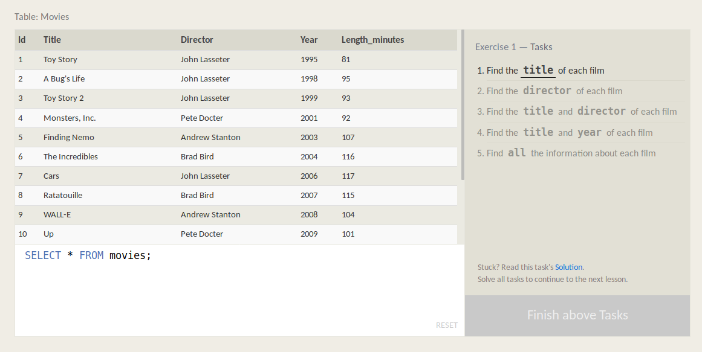
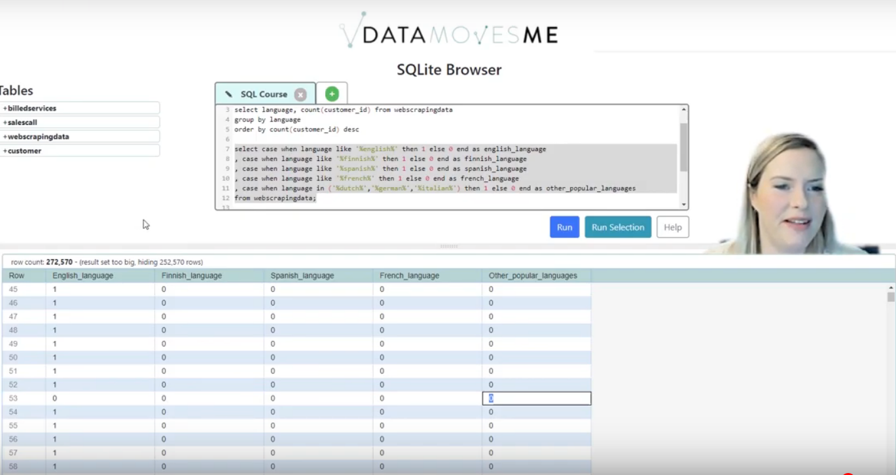
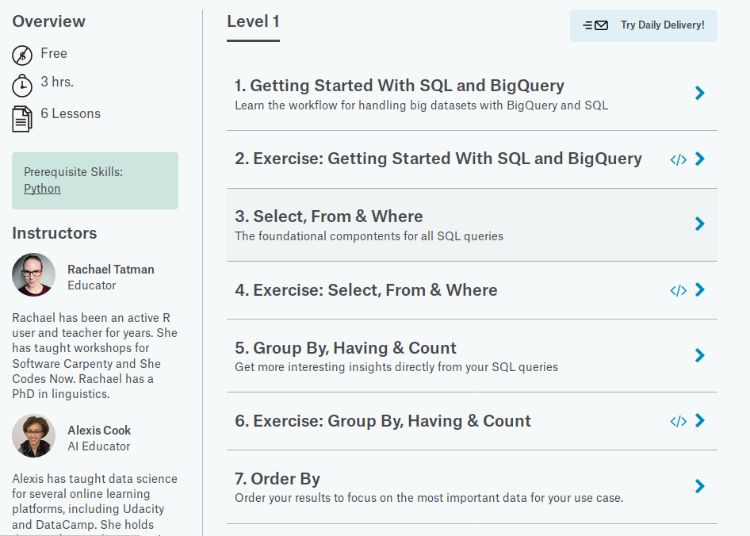
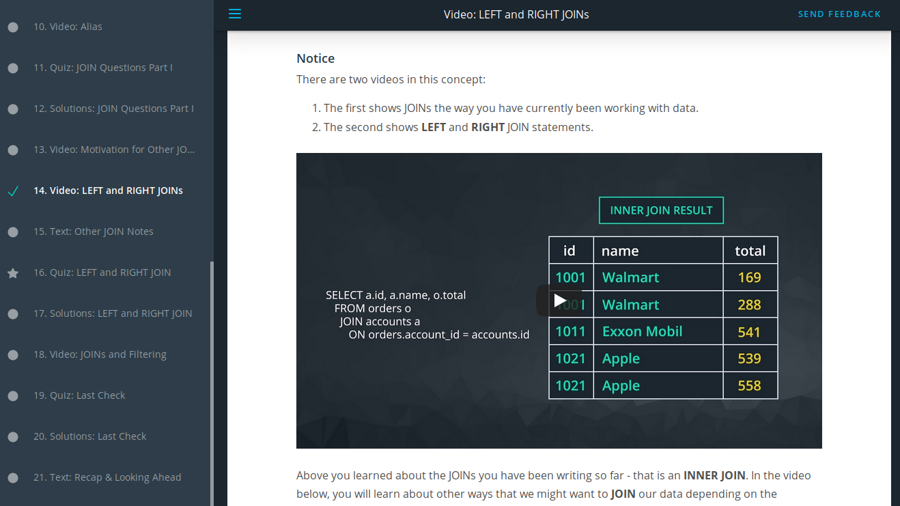

Where to learn SQL
SQL is powerful and ubiquitous and it's one of the easier data science tools to get started with. An informal polling of data scientists on Twitter and LinkedIn generated a great list of possibilities. Here are a some of my favorites.
All of these courses are beloved by someone. There are probably other good ones that I haven't included. But it's a place to start. I'm biased toward courses that are accessibile (free, no signup, intuitive to navigate) and emphasize practice. I focused on courses recommended by someone other than their creator.
Best first courses
SQL Bolt comes well recommended. It's intuitive and lightweight. Practice available throughout. Free with no sign-in.
SQL for Data Science by Kristen Kehrer, a.k.a @DataMovesHer. Gently paced video walkthroughs. Practice available throughout. Free with no sign-in.
:! Best preparation for working in Kaggle
Kaggle's Intro to SQL also comes highly recommended. It focuses on using Google BigQuery in the Kaggle environment. Registration required. It also comes with a Kaggle SQL summer camp video companion.
Fun fact: Instructor Rachel Tatman has a celebrity hedgehog named Gustav.
Most polished
SQL for Data Science Analysis, through Udacity has a highly professional presentation throughout. It's free, but sign-in required. A sequence of video examples gives a gentle progression through the material.
It's taught by Derek Steer, CEO of Mode Analytics, which also produces the popular Mode tutorials and the Mode SQL editor.
Also good
-
Free Courses
- SelectStar.com Clean design, case-driven. Free with interspersed practice. Thoughtfully written tutorial matter in between.
- PostgreSQL Exercises PostgreSQL-specific with practice throughout. Lightweight and free with no sign-in.
- W3 Schools An oldie, but a goodie. Especially good for reference.
-
Paid Courses
These cost money. Some come with a seven-day free trial.
There is a you-get-what-you-pay-for component, but the
correlation isn't perfect. I wasn't committed enough to my
research to pay for these, but you can look at their reviews
and marketing materials to get a better sense of what they're about.
- Complete SQL bootcamp, through Udemy taught by Jose Portilla. Well rated.
- Cloudera (on Coursera) Modern Big Data Analysis with SQL Specialization
- Duke University (on Coursera)
- Code Academy